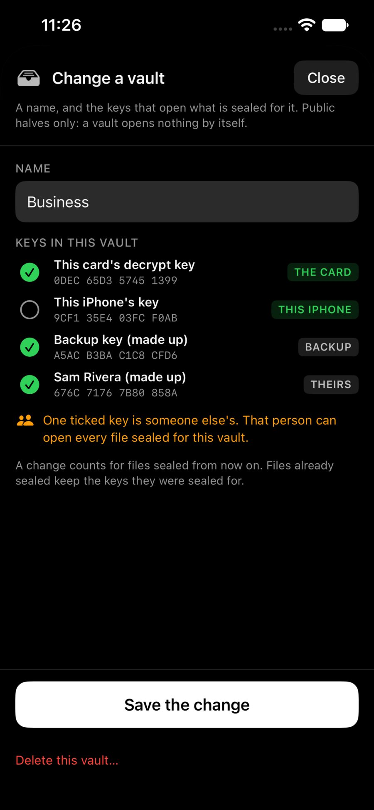
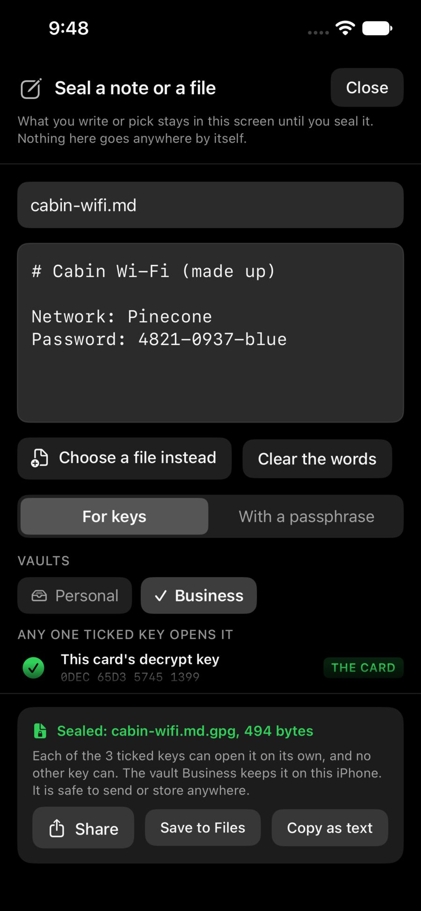

02 / 09Seal guide
Keep files in a vault
A vault is a named set of keys, like Personal or Business. Seal a file for it, and the vault keeps it.
Make a vault
- 1
On the Vault page, under Vaults, tap
New vault. - 2
Give it a name: Personal, Business, Family.
- 3
Tick the keys that should open its files. Your own keys are ticked to start with.
- 4
Tap
Save the vault.

Each ticked key opens the files on its own. Two keys are two doors, not two locks. Tick a second key you own, so losing one doesn’t lose the files.
Seal something for it
- 1
Under the vault’s name, tap
Seal for it. - 2
Write a note, or tap
Choose a file insteadand pick any file. - 3
Check the keys under Any one ticked key opens it.
- 4
Tap
Seal.

The vault keeps the sealed file on this iPhone, and the result says so. You can also Share it, Save to Files, or Copy as text. A sealed file is safe to send anywhere: only the vault’s keys open it.

Find it again
- 1
On the Vault page, the vault’s row shows how many files it keeps, like
3 files. Tap it. - 2
Each file has
Open,SendandDelete. - 3
Openbrings the file to the top of the Vault page, ready to open with Face ID or your Ledger.

Kept files stay sealed on the disk, inside Seal’s own space. They are not in iCloud Drive or the Files app. If iCloud Backup is on, they travel in your phone’s backup, still sealed.
Change or delete a vault
Tap Change on the vault’s row. A change counts for files sealed from now on: files sealed before keep the keys they were sealed for. Delete this vault… also deletes the files it keeps on this iPhone, and says how many first.